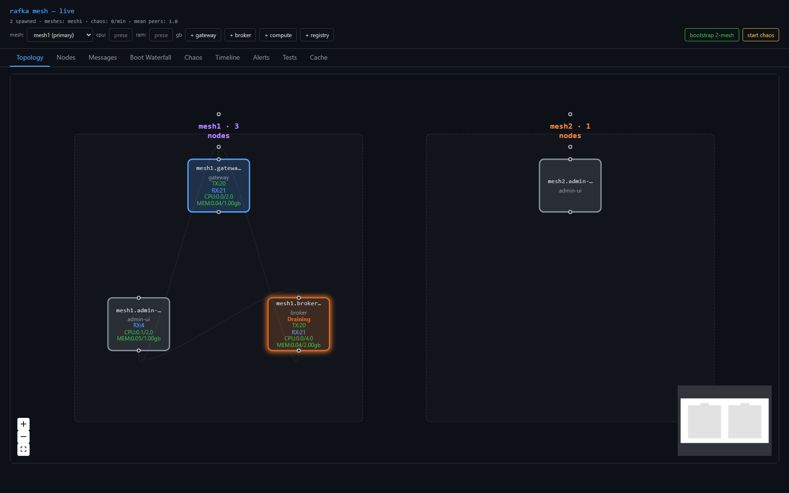

initiative mesh-v2 · branch mesh-v2 → public/mesh-v2 · completes PRD-04 §3 · 2026-06-01
CLOSED — 7/7 verified
The NodeState enum had Updating
and Draining but nothing triggered them.
Added a non-terminal SetState control op — the sibling of the kill:
InternalMeshFrame::SetState { state } (appended, wire-compat).REQUESTED_STATE override the digest-builder applies (operator Updating/Draining overrides auto health; Alive resumes/clears). send_set_state / handle_set_state_op mirror the Shutdown op; dispatched on both bi + uni reader paths.POST /api/nodes/{name}/state + Nodes-tab drain / upd / resume buttons.rafka.mesh.control.state_change_sent / state_change_received locked.Any console marks any visible node Updating/Draining (or resumes to Alive); the node's next gossip digest publishes it and a state change forces immediate re-publish, so it propagates + renders mesh-wide. Terminal Leaving/Dead are rejected (Leaving = kill via DELETE, Dead = observer-inferred).
| Test | Result |
|---|---|
| T1 build | ✅ workspace + web build clean; fresh debug binaries gated |
| T2 Draining | ✅ marked a broker Draining → renders orange on BOTH consoles (home + cross-mesh), not evicted |
| T3 Updating | ✅ → renders purple on both, not evicted |
| T4 Resume | ✅ Alive clears the override → back to Alive on both |
| T5 Reject | ✅ SetState Leaving → 400 (kill stays the DELETE path) |
| T6 Cross-mesh | ✅ mesh1 Draining/Updating renders on the mesh2 console via the backbone state field |
| T7 UI | ✅ Playwright topology shot below — broker in the orange Draining ring |
mesh1.broker marked Draining via the control op, captured by the verify harness:

Live consoles: :19100 · :19101 — drain/upd/resume on the Nodes tab.